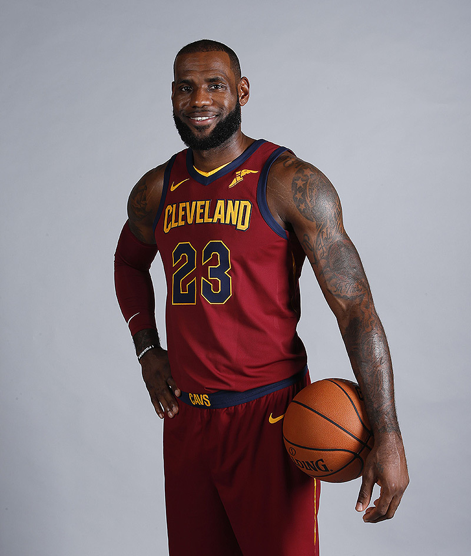
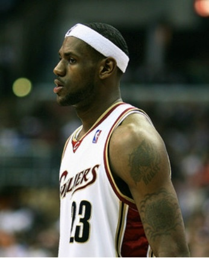

född 30 december 1984 i Akron i Ohio, kallad bland annat King James och The Chosen One, är en amerikansk basketspelare i NBA-laget Cleveland Cavaliers. Han har blivit utsedd till MVPfyra gånger, vunnit NBA tre gånger och han har då, alla tre gångerna, blivit utsedd till NBA Finals MVP.
Han tog för USA guld i OS 2008 i Peking och i OS 2012 i London. Detta var USA:s trettonde basketguld i olympiska sommarspelen.
LeBron James startade sin basketkarriär i high schoolgenom att leda The Fighting Irish till tre titlar på fyra år. James spelade point guard och noterades under sin high school-karriär för 2 657 poäng, 892 returer och 523 assister. Han draftades som etta i NBA:s draft 2003 och gick direkt från high school till NBA.
I sin första NBA-match, mot Sacramento Kings, noterades LeBron James för 25 poäng, 9 assist, 6 returer och 4 steals. Totalt i matchen satte LeBron James imponerande 60 procent av sina skottförsök.
LeBron James blev som 18-åring den yngste spelaren någonsin att göra 40 poäng i en NBA-match. Efter sin makalösa rookiesäsong blev han utnämnd till NBA Rookie of the Year före bland andra Dwyane Wade och Carmelo Anthony. James lag, Cleveland Cavaliers, avslutade säsongen med en segerstatistik på 35-47 och missade därmed slutspel.
Under sin andra NBA-säsong blev LeBron James för första gången uttagen till att få spela NBA All-Star Game i Denver, Colorado. Där stod han för 13 poäng, 6 assist och tog 8 returer. Hans East All-Stars besegrade West All-Star med 125-115.
Under säsongen blev James bland annat den yngste spelaren någonsin att sätta 50 poäng under en match. Han avslutade säsongen med ett snitt på 27,2 poäng; 7,2 assist; 7,4 returer och 2,2 steals per match. Även detta år missade laget slutspelet.
Under LeBron James tredje säsong blev han för andra gången uttagen till All-Star-matchen, som detta år spelades i Houston i Texas. James ledde Eastern All-Stars till andra raka segern, 122-120, genom att stå för 29 poäng, 6 returer och 2 assist. Efter denna prestation blev James som yngste spelare någonsin, 21 år gammal, utsedd till All-Star-matchens viktigaste spelare.
Under säsongen lyckades LeBron göra 35 poäng eller mer i 9 raka matcher, vilket bara Michael Jordan och Kobe Bryant lyckats med tidigare. Totalt under säsongen snittade LeBron 31,4 poäng; 7,0 returer och 6,6 assister per match. Genom denna prestation blev King James den yngste spelaren någonsin att snitta mer än 30 poäng under en säsong.
För första gången sedan 1998 lyckades Cleveland kvalificera sig till slutspel. I sin slutspelsdebut mot Washington Wizards lyckades James med en triple-double genom att göra 32 poäng, 11 assist och ta 11 returer. Genom detta blev LeBron den tredje spelaren genom tiderna, efter Johnny McCarthy och Magic Johnson, som lyckats göra en triple-double i sin första slutspelsmatch. Cleveland vann till slut matchen med 97-86.
I den tredje matchen gjorde James 41 poäng. Totalt under matchserien snittade han 35,7 poäng och var den största anledningen till att Cavaliers gick vidare till andra omgången efter en matchserie som de vann med 4-2. I den andra rundan av slutspelet förlorade Cleveland i 7 matcher (4-3) mot de regerande conference-mästarna Detroit Pistons. Totalt under slutspelet snittade James 30,8 poäng, 8,1 returer och 5,8 assist. Under säsongen var han en stark kandidat till utmärkelsen som mest värdefulle spelare, men fick se sig slagen av Phoenix Suns Steve Nash.

Under LeBron James fjärde säsong i NBA blev han för tredje gången i rad uttagen till All-Star-matchen. Han spelade 32 minuter (mer än någon annan i den matchen) och noterades för 28 poäng, 6 returer och 6 assists. Under säsongen lyckades Cavaliers tangera sitt tidigare vinstrekord med 50 segrar av 82 möjliga. Detta gav en andraplacering i Eastern Conference.
Under grundseriespelet snittade James 27,3 poäng; 6,7 returer; 6,0 assist och 1,6 steals per match. Hans bästa månad var mars, då han snittade hela 30,3 poäng; 7,0 assist och 6,7 returer och ledde Cleveland till en segersvit på 11-5. Under slutet av säsongen anslöt James till legendaren Oscar Robertsonatt snitta över 27 poäng, 6 assist och 6 returer under tre raka säsonger.
I första rundan av slutspelet ställdes Cleveland mot Washington Wizards och James ledde Cleveland till deras första Sweep (vinst i fyra raka matcher). Under första omgången snittade LeBron 27,8 poäng; 7,7 assist och 8,5 returer. I andra omgången ställdes Cavaliers mot New Jersey Nets, anförda av Vince Carter och Jason Kidd, och vann med 4-2 i matcher. James snittade 25,0 poäng; 7,2 returer och 8,6 assister under den andra omgången. Genom detta avancerade Cleveland till sin första Conference finals på 15 år. I Conference finals ställdes de mot Detroit Pistons.
Cavaliers förlorade två raka matcher från början men lyckades i den tredje matchen vinna med 87-82. Under matchen satte James 32 poäng, tog 9 returer och serverade 9 assist. I den fjärde matchen gjorde han 25 poäng, tog 11 returer och gjorde 7 assist. I den femte matchen, som är en av hans bästa matcher någonsin, gjorde James 48 poäng, tog 9 returer och gav 7 assist. Av sina 48 poäng gjorde han 29 av Clevelands 30 sista poäng, alla efter under de sista sex minuterna i den fjärde perioden. Cleveland vann efter en dramatisk match och dubbla förlängningsperioder. I de två förlängningsperioderna var James den ende i sitt lag som gjorde poäng. NBA:s kritiker Marv Albertuttalade sig efter matchen: "Detta är en av de bästa prestationerna i NBA:s historia". De 48 poängen som King James gjorde är det högsta en Cleveland-spelare någonsin gjort.
I den sjätte matchen gjorde LeBron bara 20 poäng, men Cleveland vann och kunde för första gången i lagets historia avancera till finalen. Väl i finalen spelade laget dåligt och blev slagna av San Antonio Spurs i fyra raka matcher.
LeBron James spelade även bra under denna säsong. Han var en av spelarna som hade chans att vinna MVP-priset (Most Valuable Player). I All-Star matchen gjorde LeBron 27 poäng 8 returer och nio assist. Hans lag vann och han blev utsedd till matchens MVP. Den 27 februari 2008 blev LeBron den yngsta att nå 10 000 poäng. Han snittade 30 poäng denna säsong. I slutspelet förlorade LeBron och Cleveland Cavaliers mot Paul Pierces Boston Celtics. Serien pågick till sju matcher. I sjunde matchen gjorde LeBron 45 poäng men det räckte inte för vinst.
Även denna säsong kom LeBron James med i All-Star-laget. Det året kunde superstjärnan Kobe Bryant spela för West All-Star-laget (han var skadad 2008). East All-Star, som James spelade för, blev utklassat. I slutspelet spelade LeBron James mot Detroit Pistons i den första rundan. LeBron och Cleveland Cavaliers vann fyra raka matcher och vann serien. LeBron fick priset som ligans mest värdefulla spelare (MVP). Det räckte dock inte hela vägen utan man blev utslagna av Dwight Howards Orlando Magic, som fick möta Los Angeles Lakers i NBA-finalen. Där blev Orlando utklassade av Kobe Bryant och Los Angeles Lakers.
Inför denna säsong hade Cleveland bytt till sig basketlegenden Shaquille O'Neal. LeBron James vann sin andra raka MVP och laget hade flest vinster i hela ligan. Det pratades mycket om att det var i år som LeBron skulle vinna NBA-mästerskapet men Cleveland åkte ut mot Boston Celtics i slutspelet.